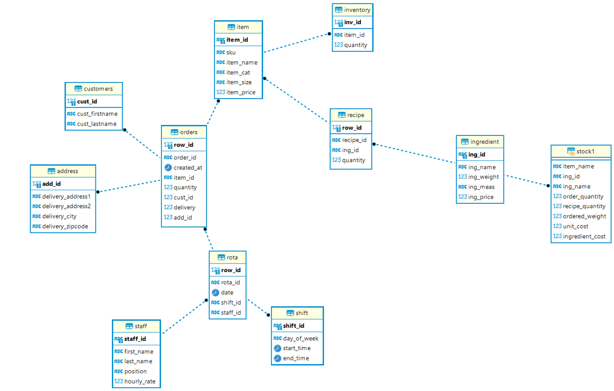
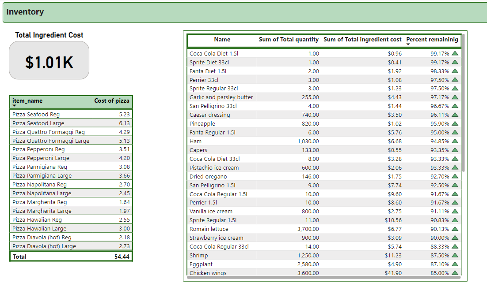
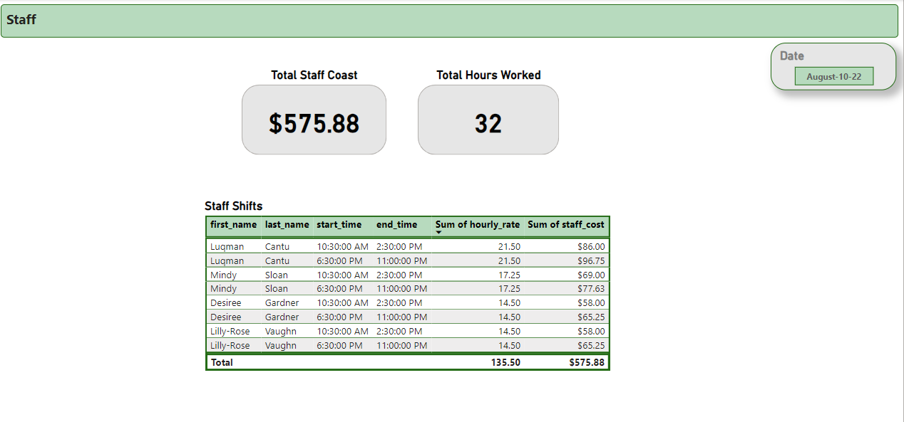

Overview
The client, Dave, is opening up a new pizzeria in his town.
It won’t be dining, just take-out and deliveries.
Dave would like to monitor business performance in a BI dashboard.
We will just take care of back-end, and he is hiring someone else to build the front-end ordering system.
There are three main areas of focus:
- Orders: The client wants to know the name, price, and quantity of each ordered item, in addition to the customers' names and adresses.
- Stock Control: The client wants to know when it's the time to order new stock.
- Staff: The client wants to know which staff members are working when.
We use fictitious business data for this project, for learning purposes.
Objective
Designing and building a tailor-made relational database for the client’s business
that will allow them to capture and store all the important information
and the data that the business generates. This will in turn help Dave
to monitor business performance in dashboards that we will build later on.
Context
-
Project Scale: Two weeks
-
Analytics based on the clients business data

- MySQL
- Microsoft Power BI
- Visual Studio Code
- DBeaver

- Data wrangling
- Descriptive statistics
- Visualizations
- Geospatial analysis in Power BI
- Data modeling

Questions and Solution
- Top Orders, total sales, total Items, sales by category,
average order values, top selling items, orders by address, orders by time, etc.
- Stock management requirements including what ingredient each pizza has and how much is needed, what is the stock status.
- Staff management requirements: Who worked on a specific day? How long stayed?
- How much is the cost of pizza including staff salary and delivery
Data model

Power BI Report
Orders dashboard

Inventory dashboard

Staff dashboard

Challenges
-
The inconsitency in the format of the provided data, e.g., when dealing with date and time values, caused issues when importing data into the MySQL DB using DBeaver.
Fortunately, DBeaver is pretty flexible when it comes to defining the date and time format.
-
Choosing between Calculated Fields in Power BI versus a row-by-row Iterator Function is a challenge as each of them provides pros and cons.
For the orders dashboard we ended up using an Iterator Function because they are considered to use less memory and are aware of the current filter context.
Recommendation
-
We recommend the client to investigate the reasons behind some of the orders not getting delivered.
Non-delivered items might lead to a refund, which means wasting time, labour, and ingredients.
Some possible reasons of unsuccessful deliveries are: late or wrong items being delivered, wrong customer address, etc.
-
The analysis shows that Banoffee pies are on-demand, but they are out of stock.
The store should always make sure the on-demand items are available to avoid losing customers (and therefore money).
The client should look into standard stocking solutions for this - e.g., when the stock is decreased to a specific value,
the re-stocking should occur.
-
The above also applies to ingredients.
Current data shows Anchovies and pizza dough ball (8 pack) are in red status and need to be ordered ASAP.
-
The staff scheduling should follow the peak times for the store to ensure service quality and pace.
7pm and 10pm are the peak times for this store.